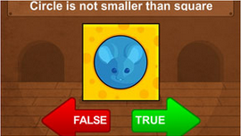
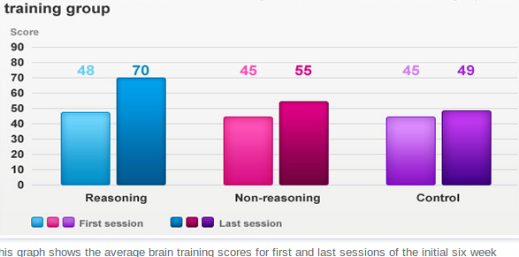
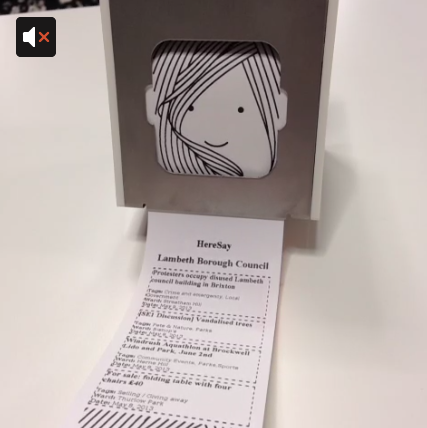
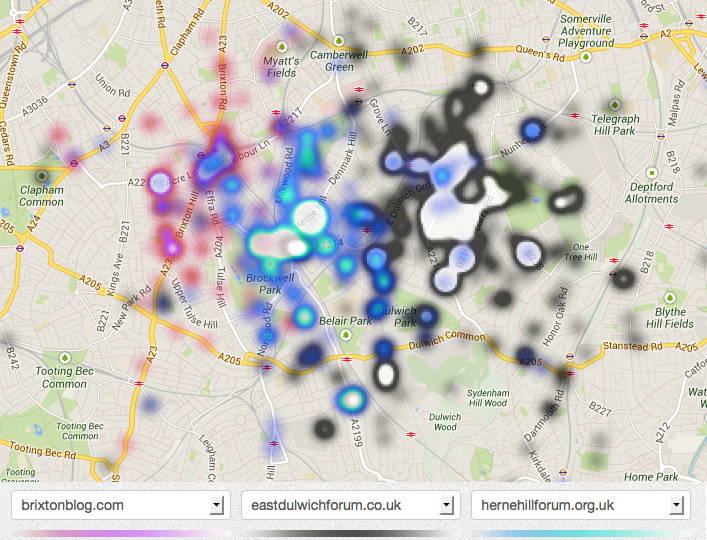
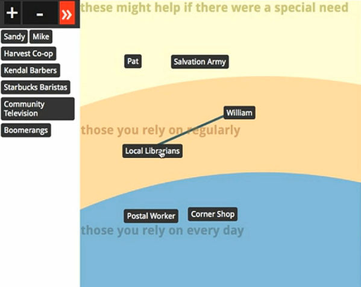
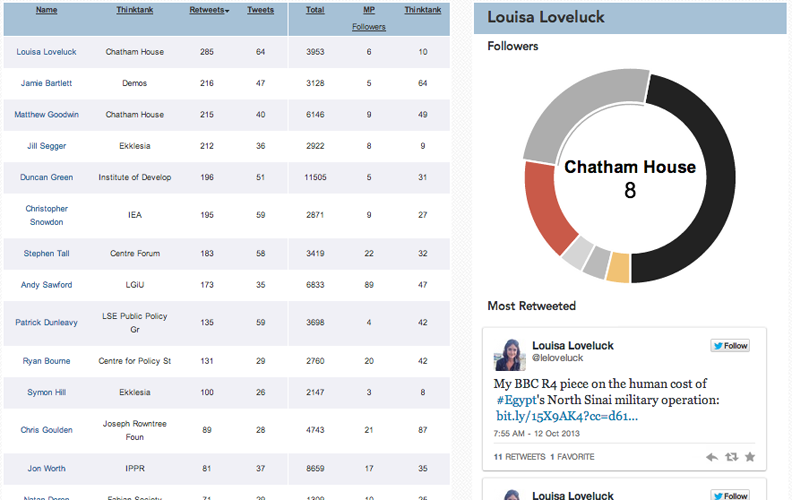
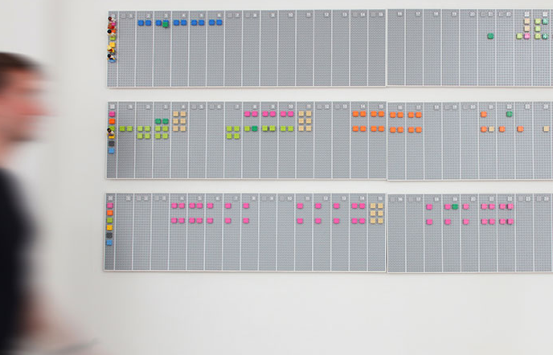
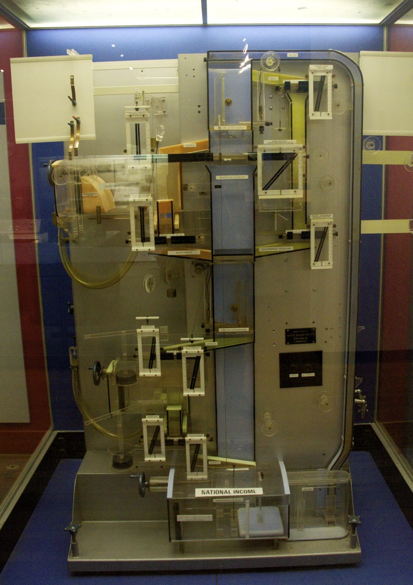
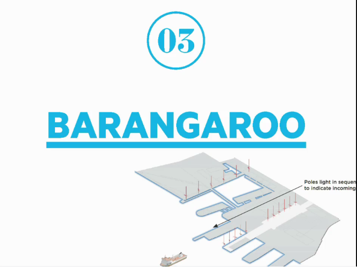
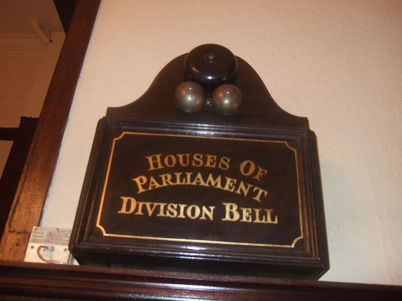

Lab UK
BBC
 Heresay & Little Printer
With Mark Simpkins at Central Saint Martins
Mapping hyperlocal forums
Social Mirror
RSA / Civic Media Centre
Wonkbook.io
NESTA
Inspiration
Vitamin Design Lego Calendar
Bill Phillips' Hydraulic Computer (1949)
Hide & Seek Canto

Dan Hill / ARUP / Barangaroo
Division Bell (19th c.)
